The Art of Composition
The Visual Conductor
In our previous lesson, we learned the Elements of Design: the raw instruments (lines, shapes, colors, textures). But how do we conduct them so they play a breathtaking symphony instead of cacophony? That invisible conductor is Composition.
The 3 Pillars of Composition
- Intentionality: Nothing in the frame exists by accident or lazy default.
- Gaze Navigation: Guiding where the viewer enters, pauses, and exits.
- Emotional Harmony: Balancing visual tension, rhythm, and stability.
Toggle compositional guides over the camera viewfinder to visualize the invisible power anchors.
Classroom Checkpoint: The 3-Second Gaze Test
When someone looks at a movie poster, advertisement, or UI screen for 3 seconds, what should happen?
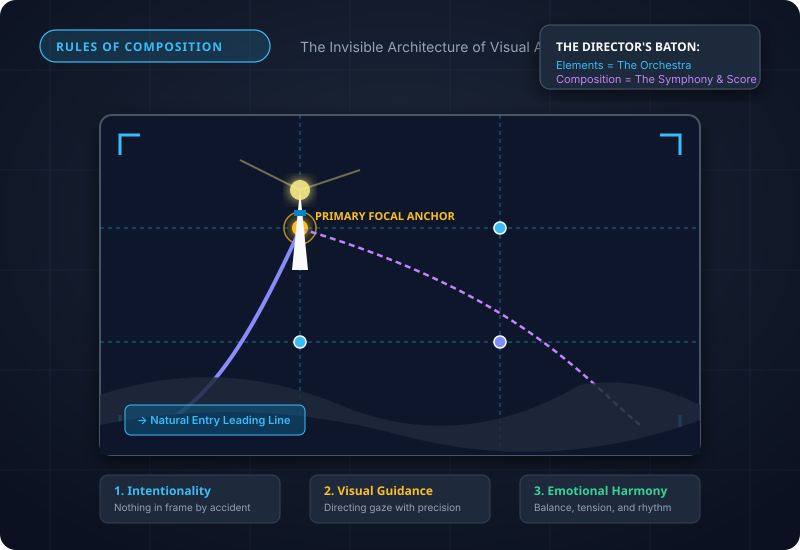
The Frame Is a Stage
Formal Definition
Composition is the conscious orchestration and placement of visual elements within a frame or canvas boundary. It is the language that transforms chaotic optical information into intentional meaning.
The Subject vs. Composition Paradox
Amateurs believe the subject is all that matters. Masters know that:
• A breathtaking subject (a mountain sunset) can look completely mediocre if shot with lazy dead-center bullseye composition and cut-off edges.
• An ordinary subject (a coffee cup, a single chair) can look iconic and sublime if orchestrated with master lighting, leading vectors, and deliberate negative space.
The 4 Gravitational Forces of the Frame
Why do objects placed right near the canvas border feel uncomfortable?
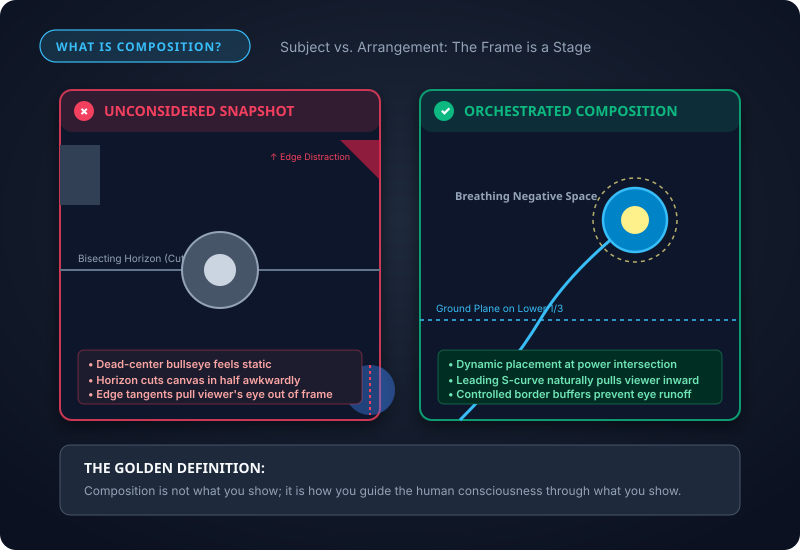
Focal Point & Scale
3.1 Focal Point (The Eye's Anchor)
The primary area of interest where the viewer's gaze lands first. Established through isolation (putting it apart), contrast (making it brighter/warmer), or convergence (lines pointing directly to it).
3.2 Scale (Narrative Proportion)
Scale is never absolute; it is relative. Placing a tiny human silhouette next to a massive monolith communicates grandeur, mystery, and awe. Placing two objects of identical size creates competition and neutralizes visual drama.
The Law of the Solo King
What occurs when a designer creates two equally massive, equally bright focal points on opposite sides of the canvas?
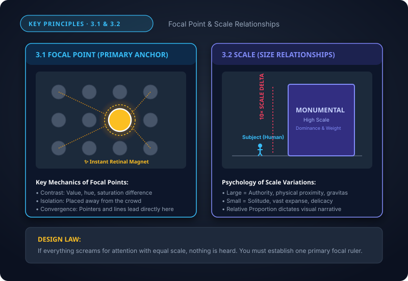
Contrast & Leading Lines
3.3 Contrast (Tension & Pop)
Without contrast, elements dissolve into wallpaper. Master composers use 4 distinct contrast levers:
• Value Contrast: Radiant luminance against deep shadow.
• Chromatic Contrast: Warm fiery orange against cool icy slate.
• Shape Contrast: Razor-sharp geometric edges against soft organic contours.
• Density Contrast: Dense detailed clutter vs. calm breathing negative space.
3.4 Leading Lines (Gaze Superhighways)
Lines naturally command human optical tracking. Converging perspective lines (roads, hallways, bridges) pull the eye straight toward the vanishing point, while Hogarth's S-Curve ("Line of Beauty") creates graceful, leisurely exploration.
Notice how perspective road lines act as laser-guided funnels directly to the sunset horizon.
The Vanishing Point Payoff
What catastrophic mistake do beginner photographers make when using converging leading lines?
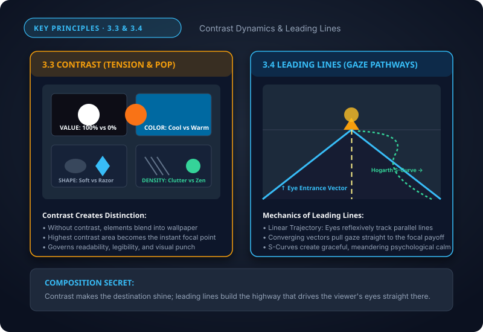
Hierarchy & Distance Depth
3.5 Visual Hierarchy (Reading Order)
Hierarchy is the roadmap of visual importance:
• Level 1 (Primary): The Hero hook (headline, key character) that grabs the first 50ms read.
• Level 2 (Secondary): Subheadings, badges, and supporting contextual clues.
• Level 3 (Tertiary): Nuanced details, metadata, captions, and fine print.
3.6 Distance (Atmospheric Perspective)
How do we convey 10 miles of distance on flat 2D glass? Through Atmospheric Perspective: moisture and dust scatter light, causing distant objects to lose contrast, blur slightly, and shift toward cooler background hues.
Level 1 (Hero Hook): Captures 100% of human attention in the first 50ms. High contrast, largest scale.
The Z-Pattern Scan Law
How does Western cultural literacy shape the way viewers consume landing pages and posters?
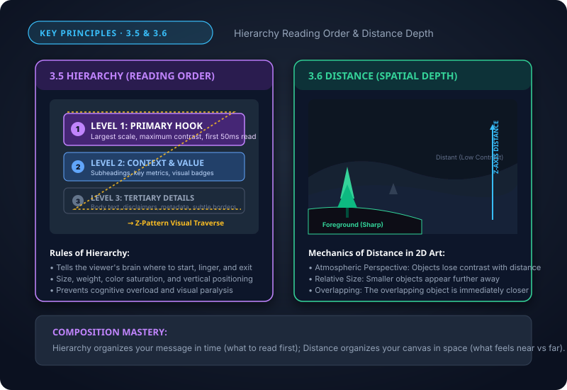
Balance, Space & Rhythm
3.7 Balance (Symmetry vs. Asymmetry)
Visual weight operates like a physics lever: Weight = Mass × Distance from Center. Symmetrical balance feels calm, formal, and sacred; Asymmetrical balance balances 1 heavy center mass against 2 or 3 smaller energetic accents placed far out near the margins.
3.8 Active Space & 3.9 Repetition
Space: White space is not dead void; it is the visual oxygen that gives luxury products their aura of prestige and prevents cognitive burnout.
Repetition: Establishing visual motifs creates unity and rhythm. Break the pattern deliberately (the anomaly rule), and you create an instant shock of attention.
Asymmetrical: Dynamic equilibrium. 1 Heavy center mass balanced by 2 small vibrant outer masses.
The Luxury White Space Rule
Why do discount supermarket flyers cram every square millimeter with text, while Rolex and Apple leave 70% of the canvas untouched?
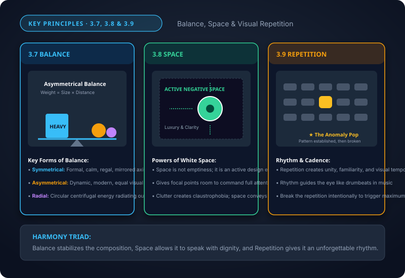
Rule of Thirds & Rule of Odds
4.1 Rule of Thirds (The 3×3 Power Grid)
Divide your canvas into nine equal rectangles with two horizontal and two vertical lines.
• The 4 Power Intersections are where the human eye naturally gravitates first.
• Align horizons to either the lower third (to emphasize expansive sky) or upper third (to emphasize ground terrain). Avoid bisecting dead-center!
4.2 Rule of Odds (1, 3, 5, 7...)
An even number of subjects (e.g. 2 trees, 2 faces) encourages the brain to pair them up into a duel, creating a static deadlock. An odd number (especially 3 or 5) provides a natural central anchor and forms dynamic triangular relationships that keep the eye circulating.
Rule of Odds (Trio): Natural center anchor. The brain loops gracefully around the triangle.
Why We Avoid Dead Center
When is dead-center placement actually desirable?
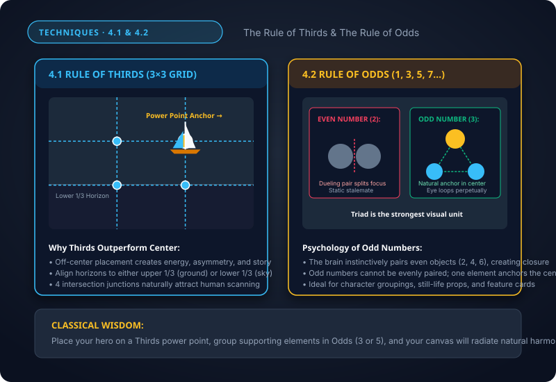
Golden Ratio & Golden Triangle
4.3 The Golden Ratio (Φ = 1:1.618)
Known since antiquity as the Divine Proportion. Based on the Fibonacci sequence (1, 1, 2, 3, 5, 8, 13, 21...), it generates a logarithmic spiral found throughout sunflowers, hurricanes, and nautilus shells. The spiral pulls the eye organically inward toward the tightest focal vortex.
4.4 The Golden Triangle (Dynamic Diagonal Spine)
A diagonal line slices from one corner to the opposite corner. Two perpendicular lines then shoot out from the remaining two corners to strike the main diagonal at 90° right angles.
• Breaks the canvas into 3 dynamic right-angled triangles.
• The 90° collision intersections form potent secondary focal anchors.
• Perfect for athletic action, movie posters, and high-energy motion.
Rule of Thirds vs. Golden Ratio
How does the Golden Ratio grid differ mathematically from the Rule of Thirds?
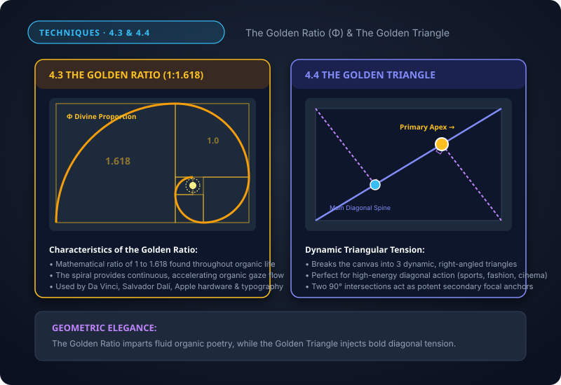
Framing & Visual Dominance
4.5 Framing (Sub-Frames)
Placing a "frame within a frame" by using doorways, stone arches, window panes, tree branches, or cast shadows.
• Blocks distracting visual edge bleed.
• Gives the viewer the psychological feeling of peeking into an intimate, protected world.
• In UI design: Modal containers, glass card borders, and hero photo masks.
4.6 Dominance (The King of the Frame)
Dominance establishes an undisputed hierarchy:
• Dominance by Size: The hero dwarfs all surrounding elements.
• Dominance by Color: A single warm crimson orb amidst muted teal subordinates.
• Dominance by Sharpness: Razor-sharp subject with creamy background bokeh.
The Over-Framing Hazard
Can a natural sub-frame ever be TOO heavy or interesting?
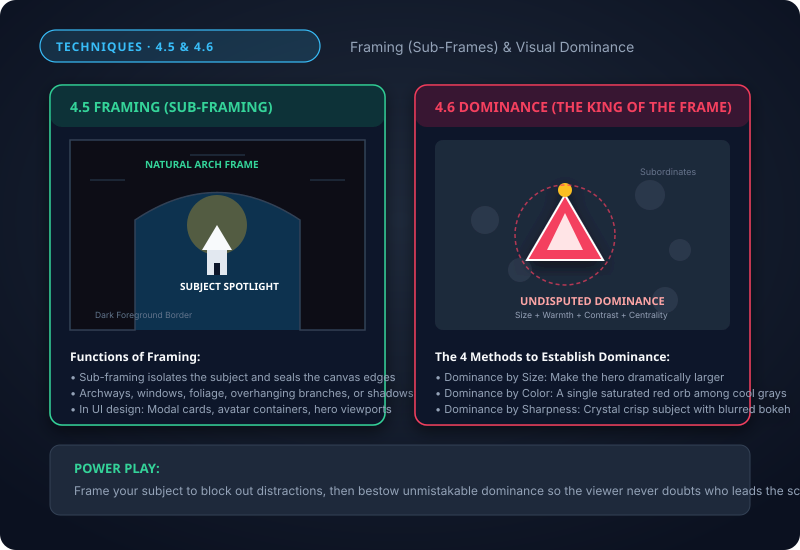
Depth, Lead Room & Flow Vector
4.7 The 3 Depth Planes (FG, MG, BG)
Every flat 2D canvas becomes a 3D window when staged across three distinct spatial planes:
• Foreground: Anchors the viewer, adds scale, provides a physical doorstep.
• Middle Ground: Houses the main narrative hero and key action.
• Background: Establishes environment, world context, and atmospheric scale.
4.8 Lead Room & 4.9 Left to Right Flow
4.8 Lead Room (Look Room): Always grant open buffer space in front of moving or looking subjects. Cramming a subject right against the edge triggers instant claustrophobia.
4.9 Left to Right Flow: In Western cognition, motion moving from Left to Right feels like progressive triumph and forward journey; Right to Left feels like returning home or struggling against resistance.
The Horror Movie Lead Room Hack
When would a filmmaker deliberately DESTROY lead room?
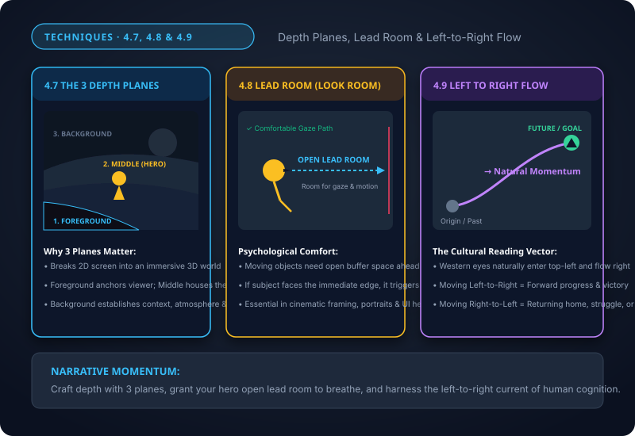
Layering, Horizon & Unusual POV
5.1 Layering (Physical Occlusion)
When one element partially overlaps another, the human brain instantly registers depth without needing any 3D glasses. Overlapping ties disparate elements into a unified physical environment and is the backbone of modern glassmorphic UI card layering.
5.2 Horizon Line & 5.3 Unusual Point of View
5.2 Horizon Placement:
• Low Horizon: Emphasizes sky, towering monumentality, and awe.
• High Horizon: Emphasizes ground pathways, intimate terrain, and maps.
5.3 Breaking Eye Level (POV): Human beings spend their lives looking at standard 5.5-foot eye level. Break it! Use Worm's Eye (looking up for power), Bird's Eye (top-down geometric omniscience), or Dutch Angle (tilted axis for suspense).
The Drone & Dutch Angle Impact
Why does tilting the horizon by just 5 to 10 degrees (Dutch Angle) trigger instant adrenaline?
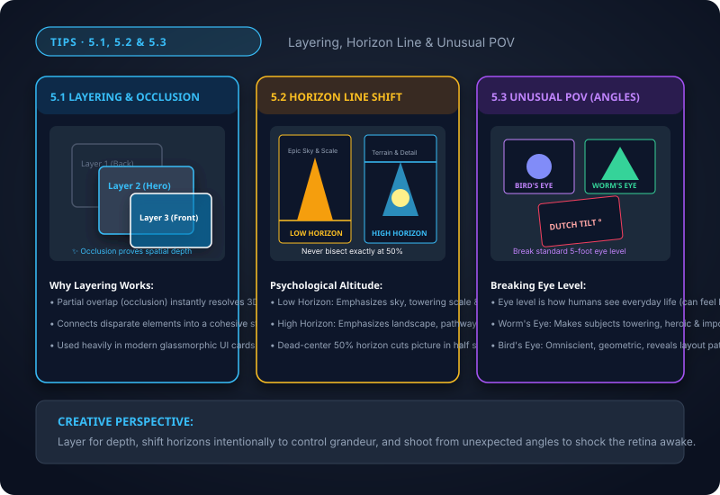
Filling Frame, Simplification & Master Audit
The Final Polish Trifecta
5.4 Filling the Frame: Get closer! Crop dead, wasted margins to elevate intimate texture and macro impact.
5.5 Simplification: "Perfection is achieved not when there is nothing more to add, but when there is nothing left to take away." Strip out competing clutter ruthlessly.
5.6 Contrast Mastery: Test your layout with the Squint Test: if the primary message dissolves when squinting, boost value contrast immediately!
The 10-Point Composition Pre-Flight Scorecard
Run through the 10-point audit on the right before exporting any poster, UI screen, or photo.
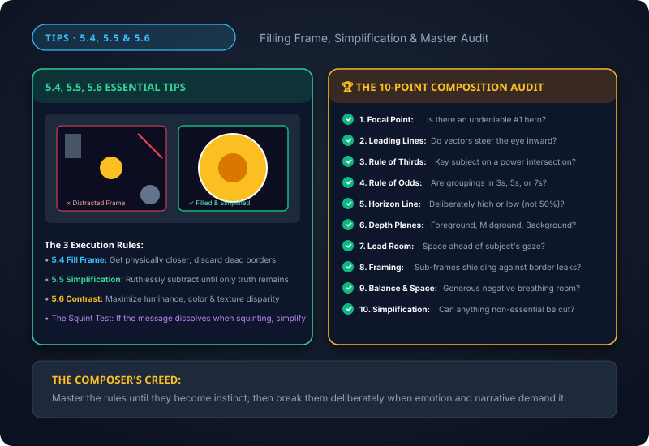